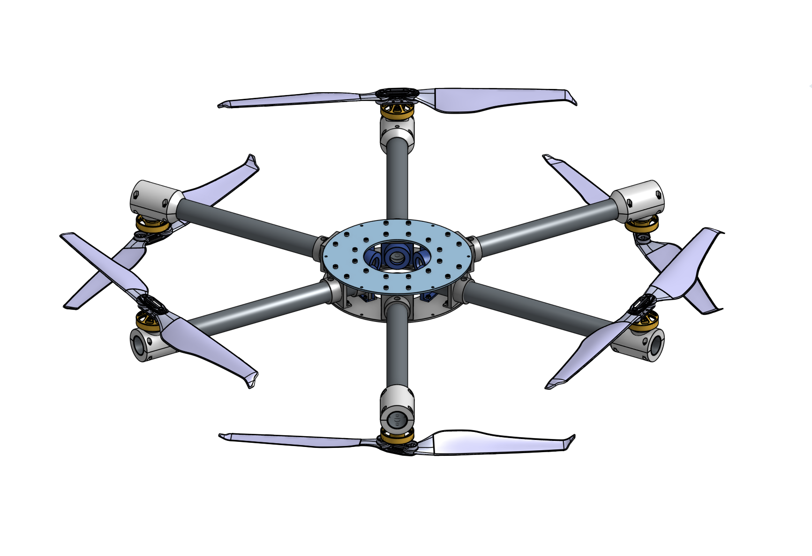
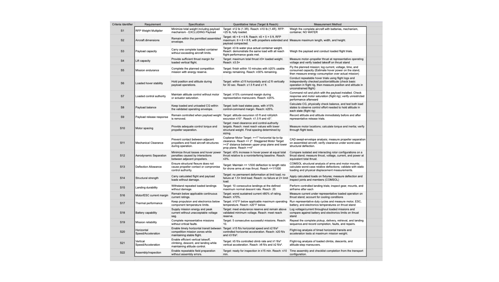
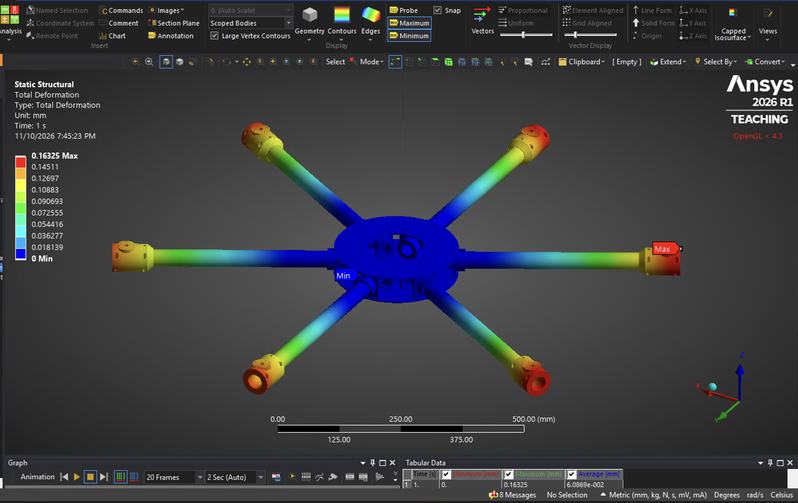
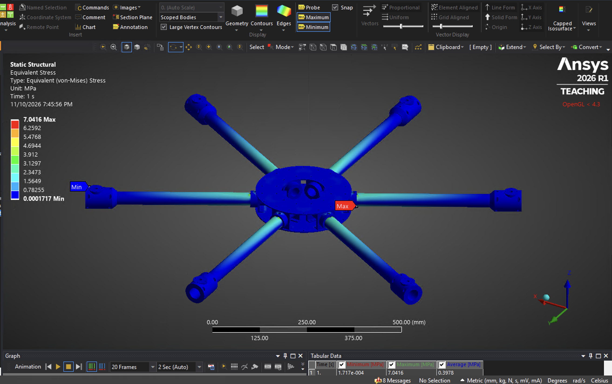
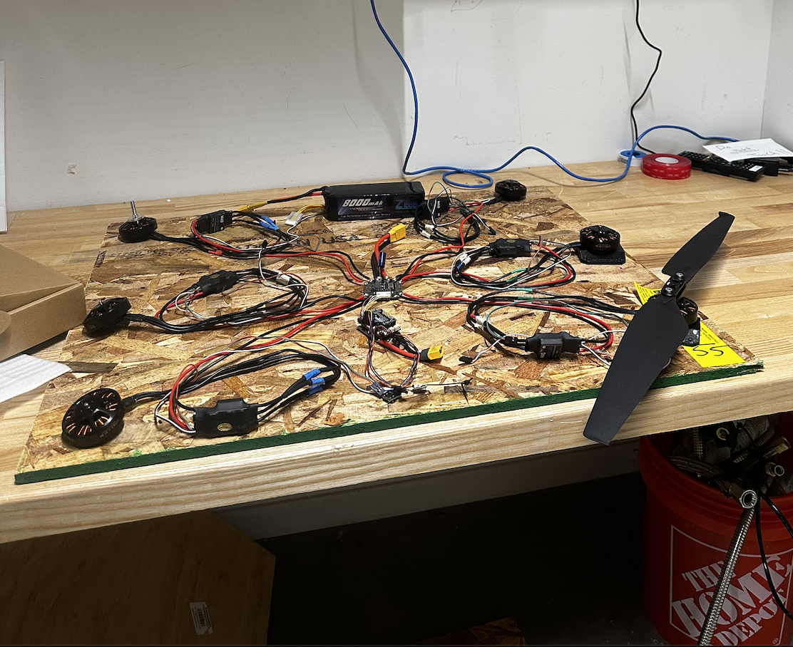
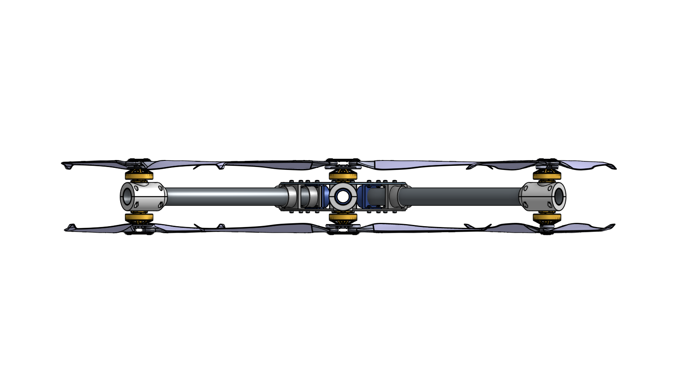

Optimized Hexacopter for Wildfire Rescue Missions
Project Overview
As the Chief Engineer for the Harvard Undergraduate Aerospace Collective UAV Team, I lead a 14-member team inthe development of a six-rotor unmanned aerial vehicle for localized fire suppression applications. The project investigates aircraft configuration, propulsion performance, and structural design to develop a compact, lightweight, and efficient UAV as a part of our debut competition entry for the Vertical Flight Society's 2027 Design Build Vertical Flight Competition
My work focuses on systems level design and integration, executive decision-making, and technical leadership. I'm responsible for overseeing each of our team's subteams, including airframe, payload, electrical, and software. This past semester, I've been focusing on rebuilding our design from scratch from last year's approach by implementing technical and quanitative reasoning behind every design decision, which includes evaluating aircraft configurations, conducting analytical performance trade studies, developing parametric CAD models driven by design requirements and Ansys FEA validations. This semester, our central focus is investigating partially overlapping propeller arrangements as an alternative to conventional hexacopter architectures.

CAD model of overlapping motor airframe assembly
Aircraft Configuration Trade Study
The first step of this year's design was to develop a trade study in which I did a comparative analysis of various motor-prop-battery combinations for 4, 5 (very unconventional but wanted to see how it would compare), and 6 rotor configurations, to finalize the most optimized system for our mission requirements. I then added more detailed weight and cost considerations to narrow the study to a six-motor configuration. I then conducted a comparative analysis of symmetric (for ease of payload integration)conventional Hex-X, coaxial Y6, and partially overlapping rotors of 5%, 10%, and 15% configurations to evaluate tradeoffs between aircraft footprint, propulsion efficiency, structural complexity, and thrust capability.
The partially overlapping configuration offers a potential compromise between the larger footprint of a conventional hexacopter and the aerodynamic interference associated with fully coaxial rotors. Using a common six-motor propulsion baseline, I evaluated configuration-dependent design considerations to inform subsequent airframe development.

Airframe Technical Specifications
Airframe Trade Study Documentation
Structural Design & Finite Element Analysis
I'm developing the hexacopter's structural architecture through parametric CAD modeling in Onshape (ease of team document sharing) and finite element analysis in Ansys. My focus has been on optimizing the rotor arm geometry and material selection to balance structural stiffness, mass, and manufacturability to meet our technical specification for rigid design to keep arm deflection under 1/500 of the unsupported arm length.
As we're currently running CFD simulations in Ansys to analyze the airflow and disturbances caused by our overlapping propeller configurations, I'm also investigating the impact of these aerodynamic interferences on the structural performance of the rotor arms and overall airframe, which includes evaluating stress concentrations and potential failure points under representative loading conditions.

FEA of rotor arm displacement under representative thrust loading.

Structural stress distribution and load transfer through the rotor arm.
Experimental Validation & Thrust Stand Development
To validate propulsion performance assumptions, our team is developing an instrumented thrust stand capable of measuring static thrust and electrical power consumption across motor operating conditions as well as interferences between an second prop and any reductions in performance by way of the overlapping propeller.
The system is intended to characterize motor-propeller performance for our exact use-case, determine thrust-to-power relationships, and provide empirical data for refining aircraft configuration and propulsion models moving forward.
System Integration & Ongoing Development
In parallel with analytical and structural development, I'm supporting payload development in which we must create a solution to collecting, distributing, retrieving, and landing a 3lb payload (filled water container), representing both fire retardant distribution and victim rescue. Additionally I also oversee all other aspects of hardware selection, mechanical integration, electronics troubleshooting, and component compatibility assessment and am currently running flat avionics tests on a power supply to ensure safety in our electronics in a controlled environment before wiring them to our low-fidelity prototype.

Flat avionics tests for safety validation.
Ongoing work includes refining the partial-overlap configurations, evaluating structural performance under representative loading conditions, and preparing for experimental and physicalpropulsion validation. Our ultimate objective is to integrate these findings into a mechanically robust and efficient UAV architecture suitable for the intended mission in April.

Integrated aircraft design and ongoing system development.